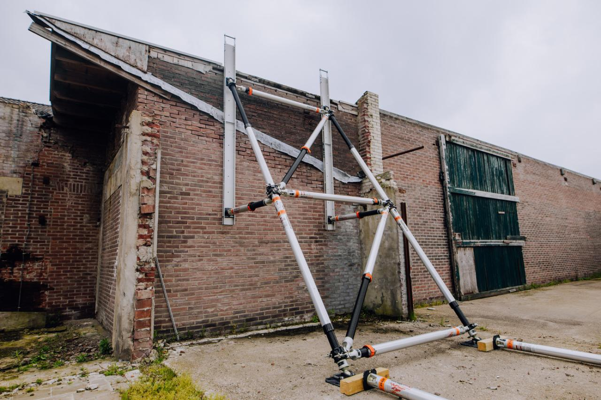
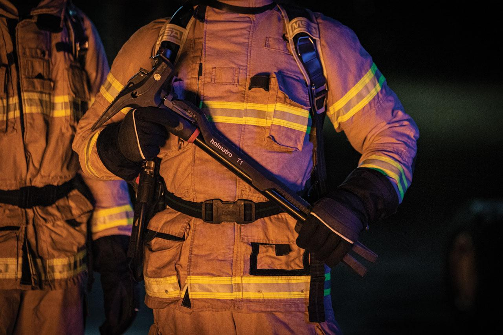

PENTHEON Tools
When Holmatro launched Pentheon Series battery-powered rescue tools, first responders around the world became part of a revolution. We gave you unrestrained performance for every mission, and now we introduce a level of performance, usability, connectivity and serviceability unlike anything you've seen before. This is the next-gen Pentheon Series.

Shoring & Stabilization
First responders must be able to adapt to every possible situation. Have the ability to change tactics every step of the way. And be smart enough to always think ten steps ahead. Holmatro understands the challenges of rescue shoring. That’s why we’ve created a shoring system that is as adaptive, versatile and intuitive as you. This is OmniShore. A shoring system reimagined from the ground up, designed in accordance with the highest standards of quality and safety. OmniShore features cutting-edge, patented innovations, giving you an edge in quickly and safely responding to every shoring scenario imaginable.

Breaching
In case of emergency, rescue workers or firefighters need to be able to forcibly enter buildings, by breaching doors or other obstacles that are in the way of their rescue operation. Mechanical tools like a Halligan tool, bolt cutters and battering rams, though very useful in specific situations, can be heavy to carry and require a lot of energy and breathing air. Our hydraulic breaching tools provide a combination of power and control, helping rescue teams all over the world to act quickly and thoroughly. Below, we give you a short summary of our hydraulic breaching tools